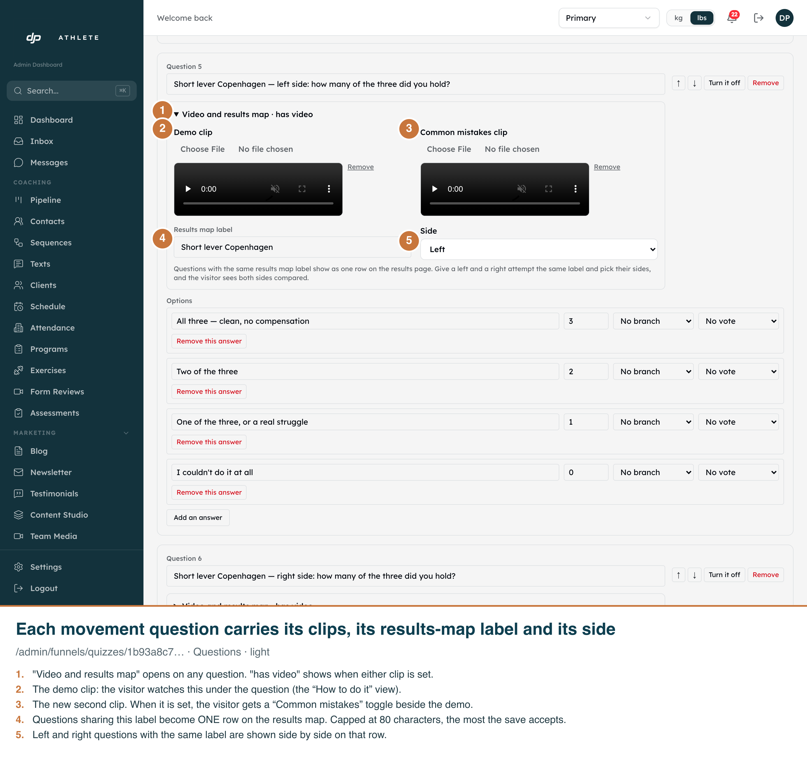
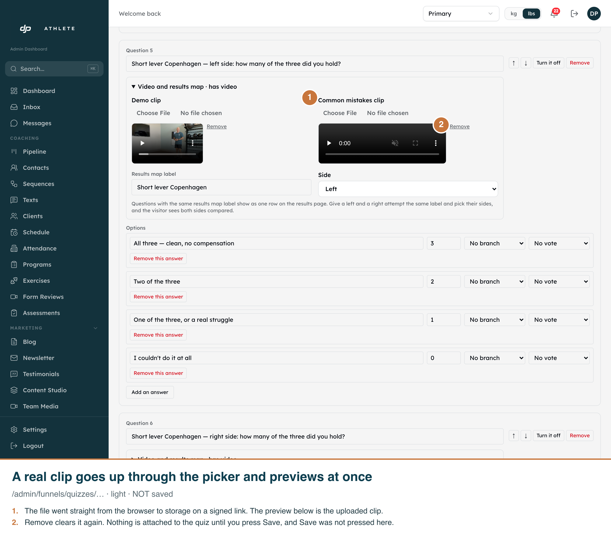
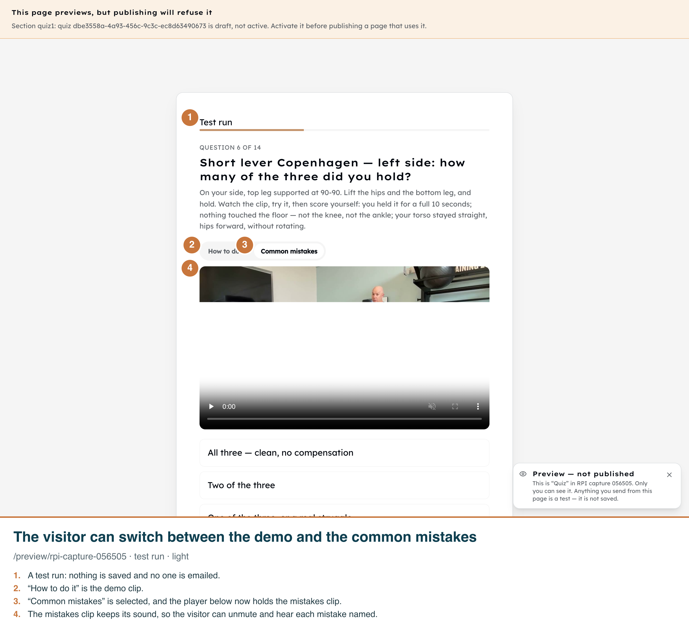
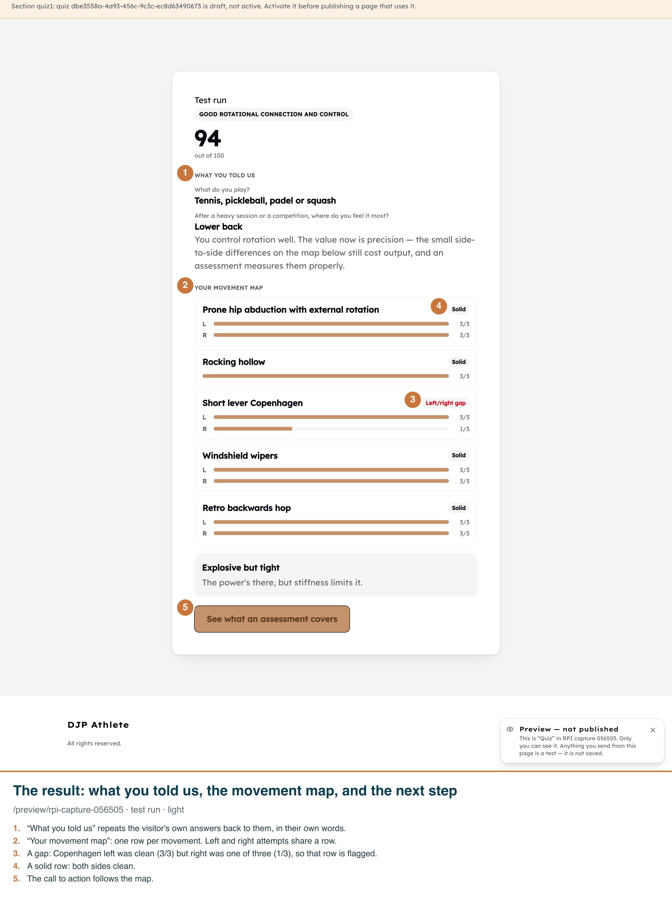
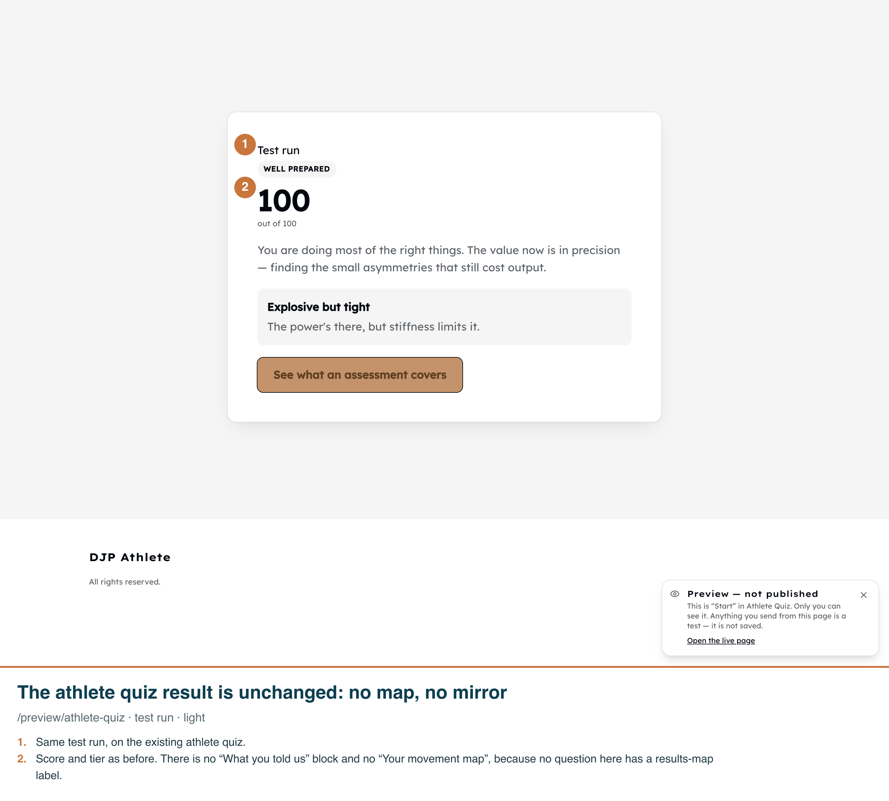

RPI video, mistakes clip and results map (dev clone, light)
1. Editor: Video and results map

2. Upload through the picker (not saved)

3. Preview: Common mistakes toggle

4. Preview result: mirror, map, CTA

5. Athlete quiz: no regression
